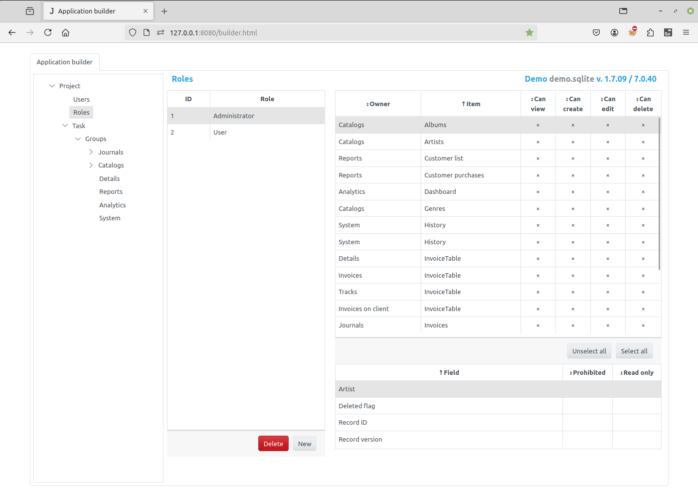

Roles¶
Select Roles node in the project tree to create and modify roles that defined users privileges. Each user must be assigned to one of roles defined in the project. A role defines the user’s rights to view, create, modify, and delete data.
To add or delete a role, use New and Delete buttons. To set permissions for a role, select the role in a role list and put or remove a check mark next to the appropriate column by clicking on it with the mouse: View, Create, Edit, Delete (allowed to view, create, modify and delete, respectively).
